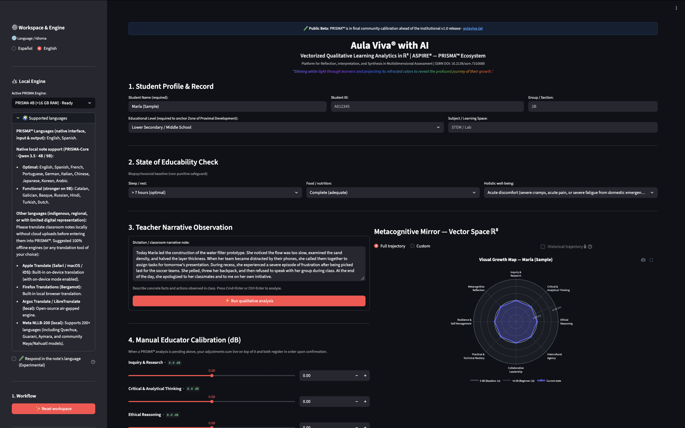

PRISMA™ — Multidimensional illumination of human learning assisted by local AI
“Shining white light through learners and projecting its refracted colors to reveal the profound journey of their growth.” (English)
| Dimension (ℝ⁸) · Δ (dB) | Traceable evidence |
|---|
